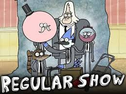

Apenas um Show

Apenas um Show (no Brasil) ou Regular Show (em Portugal e nos Estados Unidos) é
uma série de desenho animado estadunidense criada por J. G. Quintel para o Cartoon Network
estreada no dia 6 de setembro de 2010 e finalizada no dia 16 de janeiro de 2017 com um total
de 8 temporadas e 261 episódios. A série gira em torno da vida de dois amigos da classe trabalhadora,
um gaio-azul chamado Mordecai e um guaxinim chamado Rigby, que trabalham em um parque.
Eles geralmente tentam resolver um problema simples que os leva a uma desventura surreal,
extrema e muitas vezes sobrenatural. Durante essas desventuras, eles interagem com os outros
personagens principais do programa: Benson, Pairulito, Saltitão, Musculoso, Fantasmão Toca Aqui,
Margaret, CJ e Eileen.